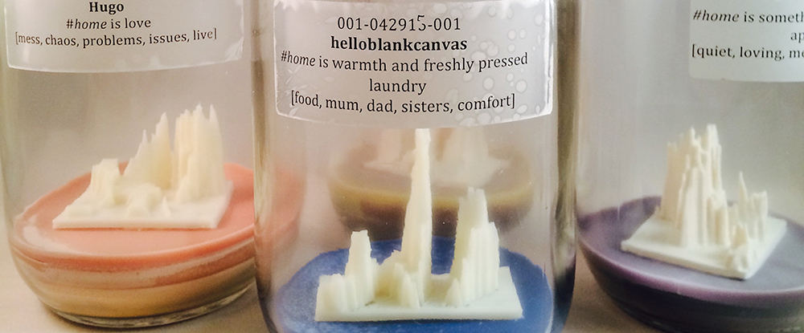

Papers and Pictorials
Session 1: AI & Geography
Wednesday, 23 October, 9:00 am, Room 8+15
LOoW: Visualizing Art & Science collaborations (Keynote)
Ingrid Koenic, Randy Lee Cutler
Website
Mapping The Prelude: A Visualisation of Wordsworth's Poetry (Pictorial)
Andrew Richardson
Pictorial (PDF)
Video Preview
Data Brushes: Interactive Style Transfer for Data Art (Paper)
Mahika Dubey, Jasmine Tan Otto, Angus G. Forbes
Paper
Video Preview
Infranet: A Geospatial Data-Driven Neuro-Evolutionary Artwork (Paper)
Graham Wakefield, Haru Hyunkyung Ji
Paper
Video Preview
Invited artist talks: Ignacio Perez-Messina, Joel Ong, and Daniele Profeta
Session 2: Physical & Environmental
Thursday, 24 October, 9:00 am, Room 2+3
Dustmark and Ozone Tattoos: Autographic displays of air pollution (Pictorial)
Dietmar Offenhuber
Pictorial (PDF)
Video Preview
Data Manifestation: Merging the Human World and Global Climate Change (Paper)
Karin von Ompteda
Paper
Video Preview
Scientific Visualization: Enriching Vocabulary via the Human Hand (Pictorial)
Francesca Samsel, Seth A. Johnson, Annie Bares, Daniel F. Keefe
Pictorial (PDF)
Video Preview
Embroidering Translations between Digital Art and Design for a Sustainable Environment (Paper)
Rodrigo Rosales González, Ana Carolina Robles Salvador
Paper
Video Preview
Invited artist talks: Sihwa Park, and Wonyoung So
Full proceedings at IEEE Xplore. Find the pictorials above, and the catalogue below.
Exhibition
Opening: Tuesday, 22 October, 6:30pmExhibition: Tuesday, 22 October - Friday, 25 October
South Foyer, Vancouver Convention Centre East
VISAP'19 Catalogue (PDF, 12MB)

#home
Joel Ong
Infranet
Haru Ji, Graham Wakefield
Arctic LiDAR
Daniele Profeta

Borrowed Scenery
Weidi Zhang

Brand Logo Sonification
Sihwa Park
Cartographers of North Korea
Wonyoung So, Fábio Duarte
Distinction Machine
Kim F. Albrecht

Do-It-Yourself visualization
Nil Tuzcu
Eyes
Yoon Chung Han, Praful Surve
Fog of Finance: Visualising Offshore and the Aesthetics of Uncertainty
Michele Mauri, Ángeles Briones, Jonathan Gray, Daniel Haberly, Chris Anderson, Tommaso Venturini, Michele Invernizzi
Machine Hallucination
Refik Anadol, Julia Pryde Thompson, Alex Morosov. Nick Boss,
OceanForestAir
Mieka West

The Space Between Characters: Trees of Translation
Ignacio Pérez-Messina, Ilana Levin, Simón López Trujillo
Visualizing Visualizers
Doris Kosminsky, Lucas Barcellos Oliveira, Claudio Esperança
Watchers
Benjamin Bogart
Beyond Borders Exhibition Opening
Tuesday, 22 October, 6:30pmSouth Foyer, Vancouver Convention Centre East
Installations by: Kim F. Albrecht, Refik Anadol, Chris Anderson, Benjamin Bogart, Nick Boss, María de Los Ángeles Briones Rojas, Yoon Chung Han, Fábio Duarte, Jonathan Gray, Daniel Haberly, Haru Hyunkyung Ji, Michele Invernizzi, Ilana Levin, Michele Mauri, Alex Morosov, Joel Ong, Ignacio Pérez-Messina, Daniele Profeta, Wonyoung So, Praful Surve, Julia Pryde Thompson, Simón López Trujillo, Tommaso Venturini, Graham Wakefield, Mieka West
Pictorials by: Annie Bares, Seth A. Johnson, Daniel F. Keefe, Dietmar Offenhuber, Andrew Richardson, Francesca Samsel
Demonstrations by: Claudio Esperança, Doris Kosminsky, Lucas Barcellos Oliveira, Sihwa Park, Nil Tuzcu, Weidi Zhang
Special exhibit: Places & Spaces: Mapping Science. Presented by IEEE VIS keynote speaker Katy Börner.